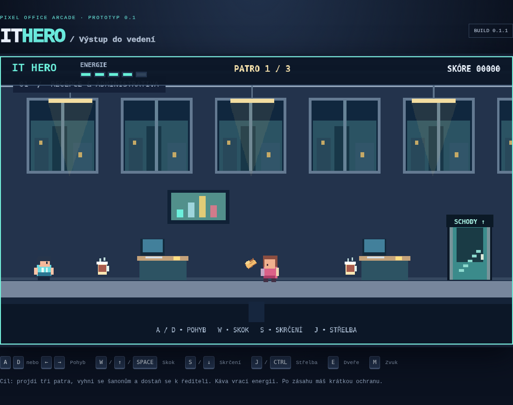
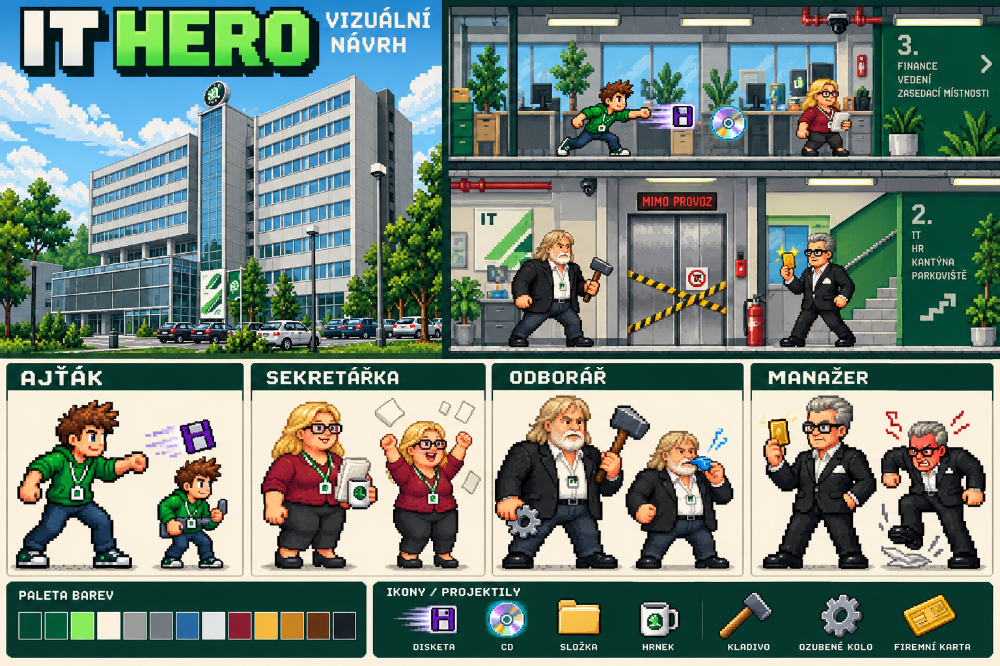
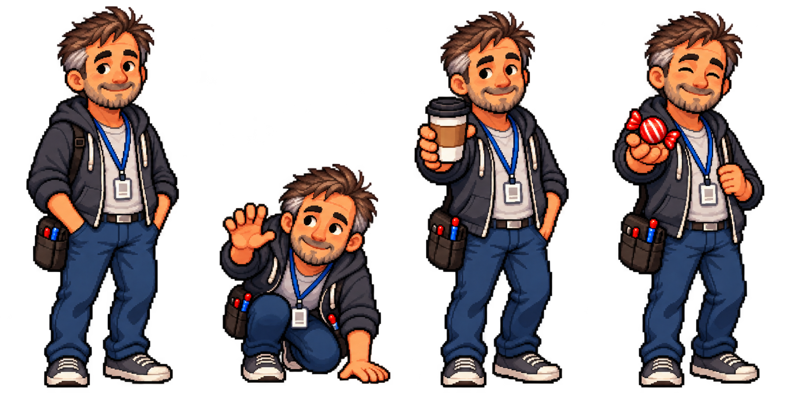
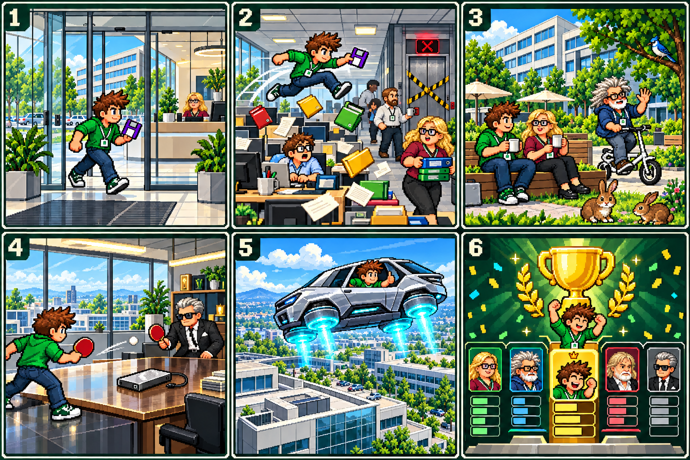
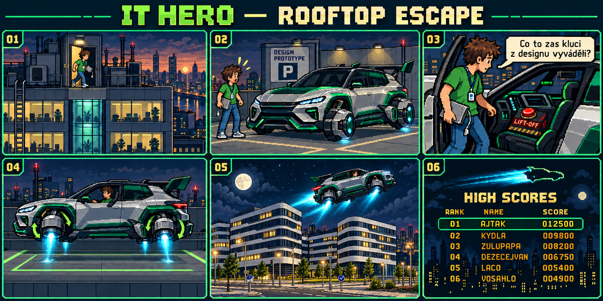

IT HERO: Z kanceláře do pixelového světa
Na začátku byla jednoduchá otázka: Co kdyby se běžný den v kanceláři změnil v arkádovou hru? Místo příšer kolegové, místo kouzelných lektvarů káva a místo meče diskety. Tak vznikl IT HERO — hra pro pobavení a zároveň praktický pokus, co dnes dokáže člověk vytvořit s pomocí AI.
Nejdřív pár kostiček a tři patra

První verze nepotřebovala dokonalou grafiku. Bylo důležité zjistit, jestli bude základ hry fungovat: projít patro, přeskočit překážku, vyhnout se šanonu a najít schody.
Teprve potom přibývala další patra, nové postavy, venkovní mezihra, mobilní ovládání a závěrečný odlet. Dnešní hra má devět pater. Ajťačka přibyla až na přání hráčů, stejně jako lehčí obtížnost Easy. Připomínky tak mění nejen drobnosti, ale i způsob, jakým se hra hraje.
Jak vznikají postavy

Postava nejdřív vzniká jako návrh: jak bude vypadat, co ponese v ruce a čím bude charakteristická. Potom potřebuje několik podob pro různé situace.

Takovým jednotlivým obrázkům se říká sprity. Když hra rychle střídá obrázky chůze, postava se zdánlivě pohybuje. Podobně funguje skok, útok nebo reakce na zásah — jako malý obrázkový film.
Vytvořit hezký návrh je ale jen začátek. Ve hře musí správně sedět ruce, vlasy i předměty. Knír, který vypadá dobře na velkém obrázku, může na malé postavičce působit jako přilepený. Proto se grafika opakovaně upravuje a kontroluje přímo při hraní. Současné podoby si můžeš prohlédnout v porovnání postav.
Z čeho se skládá obraz hry
Celá scéna má několik vrstev, podobně jako divadelní jeviště:
- Pozadí tvoří kanceláře, okna, město nebo prostor před budovou. Vytváří atmosféru.
- Herní předměty jsou stoly, plošiny, dveře nebo vozíky. Hráč musí dobře poznat, kudy může projít a na co vyskočit.
- Postavy a střely se pohybují před pozadím. Patří sem také létající diskety, míčky a další kancelářská výzbroj.
- Efekty ukazují zásah, páru nad kávou nebo pohon létajícího auta.
- Ukazatele a texty sdělují energii, skóre, patro a hlášky postav.
Vzhled vychází z pixel artu — obrázků, u kterých jsou záměrně vidět malé barevné čtverečky. Připomíná staré herní automaty, ale kombinuje je s podrobnějším kancelářským prostředím. Barevná paleta na konceptu pomáhá udržet společný styl; výrazné obrysy zase oddělují postavy a překážky od pozadí.
Vedle viditelného obrázku má postava také neviditelnou zásahovou oblast. Podle ní hra pozná, zda hráč stojí na stole, narazil do kolegy nebo ho zasáhla střela. Nemusí přesně kopírovat každý vlas; jejím úkolem je, aby střety působily spravedlivě.
Než vznikne animace, přijde storyboard
Storyboard je obrázkový plán děje. Je to něco jako krátký komiks, podle kterého se připravuje průběh hry a jednotlivé scény. Následující přehled shrnuje dnešní kampaň a ukazuje i její závěr.

- Recepce: Ajťák nebo Ajťačka vyráží zachránit externí disk.
- Cesta vzhůru: kanceláře, kolegové, překážky a jejich hlášky.
- Pauza venku: káva, zásoby CD, DžejTý na skládačce a pozorující sojka.
- Poslední patro: souboj s hlavním manažerem a odpojení HDD.
- Únik ze střechy: nástup do upraveného sportovního auta a odlet nad městem.
- Závěr: na Normal zápis do Hall of Fame, na Easy manažerova výzva zkusit vyšší obtížnost.

Co je pod kapotou
Hra běží přímo v internetovém prohlížeči, takže se nic neinstaluje. Její pravidla jsou napsaná v JavaScriptu. Knihovna Phaser pomáhá zobrazovat obrázky, pohybovat postavami a počítat srážky. Python se využíval při přípravě některých podkladů a pomocných úpravách.
- GitHub — dílna a archiv
- Uchovává soubory hry a historii změn. Je možné dohledat, co se kdy upravovalo.
- Cloudflare — webová výloha
- Odtud se hotová hra načítá do počítače nebo telefonu.
- Společná databáze — výsledková kniha a schránka nápadů
- Uchovává rekordy a odeslané návrhy či připomínky.
- Prohlížeč hráče — malý poznámkový blok
- Pamatuje si drobnosti, například které hlášky ještě nezazněly.
Hlášky se promíchávají jako balíček karet. V příslušné situaci se postupně vystřídají všechny a potom se seznam znovu zamíchá. Návrhy nových hlášek mají vlastní schránku, kde je možné je před uvolněním upravit a schválit.
A kde je v tom AI?
Hra vzniká metodou označovanou jako vibecoding. Autor popíše nápad a s pomocí Codexu připravuje kód, řeší chyby a přidává funkce. AI pomáhá také s grafickými návrhy.
Není to ale jedno tlačítko „vytvoř hotovou hru“. Každá změna se musí vyzkoušet. Část kontrol dělají automatické testy v opravdovém prohlížeči, další problémy odhalí až hráči: někde nejde vyskočit na plošinu, jinde palec zakrývá obraz nebo se překrývají dvě hlášky.
IT HERO tak postupně roste díky nápadům, zkoušení a připomínkám. Jeho cílem je pobavit, vykouzlit úsměv a naučit autora něco nového.
A když při tom dochází energie? No nejdřív kávu, pak zázraky…